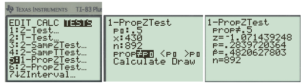
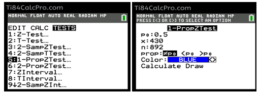
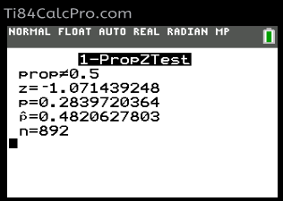

Objectives
At the end of this section you will be able to:
-
Write hypotheses involving proportions
-
Determine the test statistic and p-value for the z-test for proportions.
-
Write the conclusion of a test in context
BenedictParrotVocals.csv. Suppose we want to test whether the proportion of parrots that regularly interacted socially with other parrots is greater than 50%.
BenedictParrotVocals.csv. Define a parrot as having a small mimicry repertoire if its total number of mimicked sounds, phrases, and words is less than \(15\text{.}\)
BenedictParrotVocals.csv. Suppose we want to test whether the proportion of parrots identified as male is different from 50%
5: 1-PropZ Test and press [ENTER] to select the test.

https://ti84calcpro.com/
5: 1-PropZ Test and press [ENTER] to select the test.

